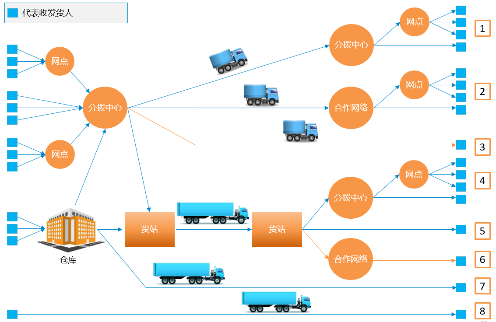

整车运输是物流运作的重要环节，在物流各环节中运输时间及运输成本占有相当重要的比重。随着社会的发展，客户对运输到货及时性、运输过程可视性、在途货物安全性的要求越来越高，如何对整车运输网络和运输作业进行有效的管理，使得运输任务、资源控制、状态跟踪、信息反馈等信息得以顺利传递，是物流企业迫切需要解决的问题，4PNT的整车运输管理系统解决方案，可以帮助企业打造智能、灵活、高效的运输管理系统，改善运输管理水平，使运输各个环节更趋于高效精益。
公路整车运输运营模式分析如下：

4PNT公路整车运输管理信息化方案综合分析行业运营模式，发货人通过网点或仓库完成前端集货，通过分拨中心货物进入干线运输，达到目的城市后，借助多级分拨中心和网点完成末端的运输和配送；发货人完成前端集货后，通过大型货站或货物中转地将货物从启运地运往目的地，抵达目的地后，借助各级运输网点及网络将货物运送至收货人手中。整个过程包括了自营车辆、委外车辆、加盟车辆。